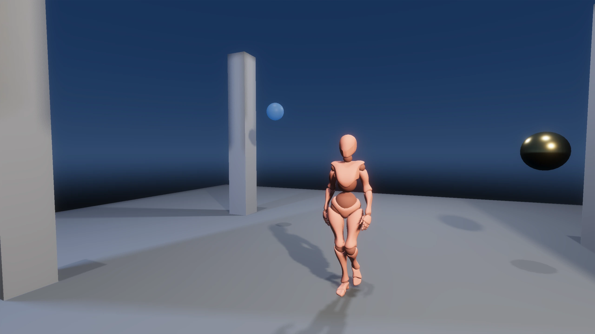

A game engine
for desktop and web.
Build 2D and 3D games with C# or Rust,
using the same editor and project.
From inside the engine.
The boundaries, trade-offs and implementation details behind the features. Follow a decision all the way into the source.

A frame is not the world.
Why the renderer receives an extracted packet, what stays alive around it, and why CPU completion is not GPU completion.
Read the engineering note ↗
What survives a C# reload?
A shared SDK identity, collectible assemblies and cached properties. Replacing code is not the same as preserving live state.
Read the engineering note ↗
Commands, not coordinates.
How MCP reaches the live editor, why mutations run on its main thread, and why a successful command still needs visual proof.
Read the engineering note ↗One engine.
Room for your whole game.
Build scenes, author sprites, inspect components and run gameplay without leaving your project.
The world, in context.
Author with a dockable viewport, hierarchy and component inspectors. The editor runs the full render graph: GPU-driven culling, tiled lighting, shadows and post-processing.
Read the editor workflow ↗A whole world.
Built with AetherCore.
FoxShowcase
Walk the trails, meet animated wildlife and uncover field notes across a sunset landscape. Lighting, materials, physics, animation and interactive UI come together in one AetherCore example project.
Fresh browser build and gameplay captures pending.Follow the systems.
Select a layer to see what it owns, what it hands over, and the boundaries that keep the engine understandable.
01AuthorScenes & asset identity
Know the asset.
Resolve the resource.

Components can name an asset without serializing a raw memory address. The catalogue resolves that identity through the engine’s existing mesh, texture and material systems.
- The choice
- One catalogue; reuse the existing owning registries instead of introducing a second texture or material cache.
- The boundary
- Source-derived identity is not a promise of rename-stable GUIDs or automatic streaming.
02SimulateGameplay & world state
Different languages.
Real engine systems.

Scripts work with the engine’s entities and components. Jolt handles 3D physics, Box2D handles 2D, and animation supplies the pose data that rendering consumes.
- The choice
- C# uses a managed SDK and native host boundary; replacing its game assembly recreates script instances.
- The boundary
- Current C# reload requests require stopping Play. Rust uses rebuild/relaunch; arbitrary live state does not migrate.
03RenderExtraction & frame ownership
A moving world.
A defined handoff.
The native renderer consumes an extracted frame rather than traversing a world that gameplay is changing. Camera, light and debug data travel with the frame’s identity and draw slot.
- The choice
- Explicit per-frame extraction instead of a retained render proxy kept in sync by incremental changes.
- The boundary
- A packet is not a deep copy of GPU resources. Slot reuse and GPU completion still need their own lifetime rules.
04PublishCooked content & target scope
Ship the runtime.
Leave the tools behind.

Web publishing cooks supported content, builds the selected gameplay language and packages the loader, Wasm and asset payloads. A manifest records sizes and hashes.
- The choice
- Qualify an extracted package at a nested URL, away from the source project, so local files cannot hide missing payloads.
- The boundary
- Browser support is profile-based, not universal desktop parity. Unsupported content is rejected instead of silently omitted.
Open a system on the left to inspect its handoff.
Open the engine.
Start a project.
The setup guide covers native builds and your first project. Browser publishing has its own supported profiles and requirements.